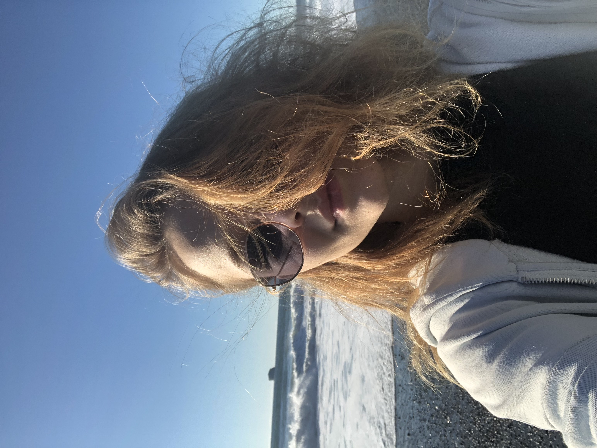

My experience with Washington is just home. I love the cool fresh ocean air. For me, it's the most ideal
getaway. We pack blankets, chairs, wood, hotdogs, and smores and always have the best time. I enjoy that the
grey sky reflects the water. I love the cliffs and venturing out along the shore. It's my favorite place in our
Pacific Northwest.

A few things that come to my head when I think of our Washington beach: